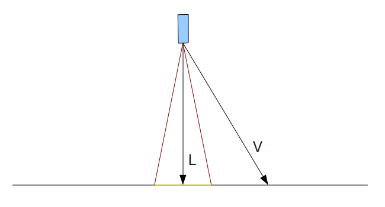
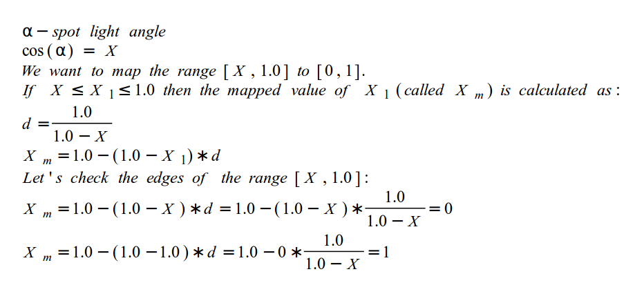

Background
The spot light is the third and final light type that we will review (at least for a little while...). It is more complex than directional light and point light and essentially borrows stuff from both. The spot light has an origin position and is under the effect of attenuation as distance from target grows (as point light) and its light is pointed at a specific direction (as directional light). The spot light adds the unique attribute of shedding light only within a limited cone that grows wider as light moves further away from its origin. A good example for a spot light is the flashlight. Spot lights are very useful when the character in the game you are developing is exploring an underground dungeon or escaping from prison.
We already know all the tools to develop the spot light. The missing piece is the cone effect of this light type. Take a look at the following picture:
The spot light direction is defined as the black arrow that points straight down. We want our light to have an effect only on the area limited within the two red lines. The dot product operation again comes to the rescue. We can define the cone of light as the angle between each of the red lines and the light direction (i.e. half the angle between the red lines). We can take the cosine 'C' of that angle and perform a dot product between the light direction 'L' and the vector 'V' from the light origin to the pixel. If the result of the dot product is larger than 'C' (remember that a cosine result grows larger as the angle grows smaller), then the angle between 'L' and 'V' is smaller than the angle between 'L' and the two red lines that define the spot light cone. In that case we want the pixel to receive light. If the angle is larger the pixel does not receive any light from the spot light. In the example above a dot product between 'L' and 'V' will yield a result which is smaller than the dot product between 'L' and either one of the red lines (it is quite obvious that the angle between 'L' and 'V' is larger than the angle between 'L' and the red lines). Therefore, the pixel is outside the cone of light and is not illuminated by the spot light.
If we go with this "receive/doesn't receive light" approach we will end up with a highly artificial spot light that has a very noticeable edge between its lit and dark areas. It will look like a perfect circle within total darkness (assuming no other light sources). A more realistic looking spot light is one whose light gradually decreases towards the edges of the circle. We can use the dot product that we calculated (in order to determine whether a pixel is lit or not) as a factor. We already know that the dot product will be 1 (i.e. maximum light) when the vectors 'L' and 'V' are equal. But now we run into some nasty behavior of the cosine function. The spot light angle should not be too large or else the light will be too widespread and we will loose the appearance of a spot light. For example, let's set the angle at 20 degrees. The cosine of 20 degrees is 0.939, but the range [0.939, 1.0] is too small to serve as a factor. There is not enough room there to interpolate values that the eye will be able to notice. The range [0, 1] will provide much better results.
The approach that we will use is to map the smaller range defined by the spot light angle into the larger range of [0, 1]. Here's how we do it:
The principle is very simple - calculate the ratio between the smaller range and the larger range and scale the specific range you want to map by that ratio.
Source walkthru
(lighting_technique.h:68)
struct SpotLight : public PointLight
{
Vector3f Direction;
float Cutoff;
SpotLight()
{
Direction = Vector3f(0.0f, 0.0f, 0.0f);
Cutoff = 0.0f;
}
};
The structure that defines the spot light is derived from PointLight and adds the two attributes that differentiate it from the point light: a direction vector and cutoff value. The cutoff value represents the maximum angle between the light direction and the light to pixel vector for pixels that are under the influence of the spot light. The spot light has no effect beyond the cutoff value. We've also added to the LightingTechnique class an array of locations for the shader (not quoted here). This array allows us to access the spot light array in the shader.
(lighting.fs:39)
struct SpotLight
{
struct PointLight Base;
vec3 Direction;
float Cutoff;
};
...
uniform int gNumSpotLights;
...
uniform SpotLight gSpotLights[MAX_SPOT_LIGHTS];
There is a similar structure for the spot light type in GLSL. Since we cannot use inheritance here as in the C++ code we use the PointLight structure as a member and add the new attributes next to it. The important difference here is that in the C++ code the cutoff value is the angle itself while in the shader it is the cosine of that angle. The shader only cares about the cosine so it is more efficient to calculate it once and not for every pixel. We also define an array of spot lights and use a counter called 'gNumSpotLights' to allow the application to define the number of spot lights that are actually used.
(lighting.fs:85)
vec4 CalcPointLight(struct PointLight l, vec3 Normal)
{
vec3 LightDirection = WorldPos0 - l.Position;
float Distance = length(LightDirection);
LightDirection = normalize(LightDirection);
vec4 Color = CalcLightInternal(l.Base, LightDirection, Normal);
float Attenuation = l.Atten.Constant +
l.Atten.Linear * Distance +
l.Atten.Exp * Distance * Distance;
return Color / Attenuation;
}
The point light function has gone through a minor modification - it now takes a PointLight structure as a parameter, rather than access the global array directly. This makes it simpler to share it with spot lights. Other than that, there is no change here.
(lighting.cpp:fs)
vec4 CalcSpotLight(struct SpotLight l, vec3 Normal)
{
vec3 LightToPixel = normalize(WorldPos0 - l.Base.Position);
float SpotFactor = dot(LightToPixel, l.Direction);
if (SpotFactor > l.Cutoff) {
vec4 Color = CalcPointLight(l.Base, Normal);
return Color * (1.0 - (1.0 - SpotFactor) * 1.0/(1.0 - l.Cutoff));
}
else {
return vec4(0,0,0,0);
}
}
This is where we calculate the spot light effect. We start by taking the vector from the light origin to the pixel. As is often the case, we normalize it to get it ready for the dot product ahead. We do a dot product between this vector and the light direction (which has already been normalized by the application) and get the cosine of the angle between them. We then compare it to the light's cutoff value. This is the cosine of the angle between the light direction and the vector that defines its circle of influence. If the cosine is smaller it means the angle between the light direction and the light to pixel vector places the pixel outside the circle of influence. In this case the contribution of this spot light is zero. This will limit the spot light to a small or large circle, depending on the cutoff value. If it is the other way around we calculate the base color as if the light is a point light. Then we take the dot product result that we've just calculated ('SpotFactor') and plug it into the forumla described above. This provides the factor that will linearly interpolate 'SpotFactor' between 0 and 1. We multiply it by the point light color and receive the final spot light color.
(lighting.fs:122)
...
for (int i = 0 ; i < gNumSpotLights ; i++) {
TotalLight += CalcSpotLight(gSpotLights[i], Normal);
}
...
In a similar fashion to point lights we have a loop in the main function that accumulates the contribution of all spot lights into the final pixel color.
(lighting_technique.cpp:367)
void LightingTechnique::SetSpotLights(unsigned int NumLights, const SpotLight* pLights)
{
glUniform1i(m_numSpotLightsLocation, NumLights);
for (unsigned int i = 0 ; i < NumLights ; i++) {
glUniform3f(m_spotLightsLocation[i].Color, pLights[i].Color.x, pLights[i].Color.y, pLights[i].Color.z);
glUniform1f(m_spotLightsLocation[i].AmbientIntensity, pLights[i].AmbientIntensity);
glUniform1f(m_spotLightsLocation[i].DiffuseIntensity, pLights[i].DiffuseIntensity);
glUniform3f(m_spotLightsLocation[i].Position, pLights[i].Position.x, pLights[i].Position.y, pLights[i].Position.z);
Vector3f Direction = pLights[i].Direction;
Direction.Normalize();
glUniform3f(m_spotLightsLocation[i].Direction, Direction.x, Direction.y, Direction.z);
glUniform1f(m_spotLightsLocation[i].Cutoff, cosf(ToRadian(pLights[i].Cutoff)));
glUniform1f(m_spotLightsLocation[i].Atten.Constant, pLights[i].Attenuation.Constant);
glUniform1f(m_spotLightsLocation[i].Atten.Linear, pLights[i].Attenuation.Linear);
glUniform1f(m_spotLightsLocation[i].Atten.Exp, pLights[i].Attenuation.Exp);
}
}
This function updates the shader program with an array of SpotLight structures. This is the same as the correspoding function for point lights, with two additions. The light direction vector is also applied to the shader, after it has been normalized. Also, the cutoff value is supplied as an angle by the caller but is passed to the shader as the cosine of that angle (allowing the shader to compare a dot product result directly to that value). Note that the library function cosf() takes the angle in radians so we use the handy macro ToRadian in order to translate it.
For more information on this subject check out the following video tutorial by Frahaan Hussain.
Next tutorial